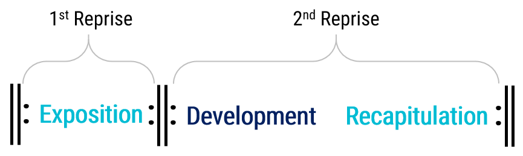
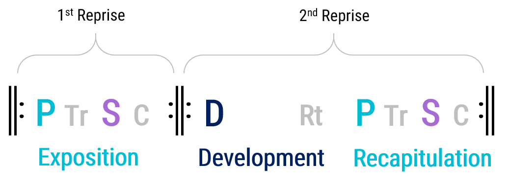
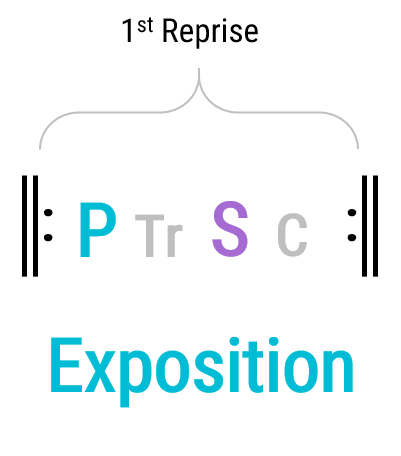

Open Music Theory：繁體中文版
奏鳴曲式
{kind=link}

- 1st Reprise＝第一反覆段；
- 2nd Reprise＝第二反覆段。
- Exposition＝呈示部；
- Development＝發展部；
- Recapitulation＝再現部。
第一組反覆記號只包住呈示部，第二組包住發展部與再現部。
{kind=link}

1st／2nd Reprise＝第一／第二反覆段。
- P＝主部主題；
- Tr＝過渡段；
- S＝副部主題；
- C＝結束段；
- D＝發展部；
- Rt＝再過渡段。
- Exposition＝呈示部；
- Development＝發展部；
- Recapitulation＝再現部。
查看英文原文
Key Takeaways
- Sonata form is a complex manifestation of a harmonically open, rounded binary form that is also balanced.
- The first reprise is called the exposition, and the second reprise contains the development and recapitulation.
- The exposition has two core sections in different keys called the primary theme and secondary theme.
- The primary and secondary themes are separated by a transition.
- The secondary theme is typically followed by a large suffix called the closing section.
- The development and recapitulation may have a retransition between them.
- The recapitulation’s secondary theme should be in the overall tonic key.
- The sonata form proper may be preceded by an introduction or followed by a coda.
At the largest level, the form is as follows in Example 1, and each of those large levels is further subdivided, as shown in example 2.
奏鳴曲式廣泛使用且結構複雜，因此發展出一套專有術語，描述其中多種曲式組成部分；不過，這些部分仍與其他曲式段落具有共同特性（參見〈曲式段落概論〉）。奏鳴曲式的第一反覆段稱為「呈示部」（exposition），因為它呈現作品的主要主題材料。呈示部可以再分成四個各有專名的段落：
{kind=link}

- 1st Reprise＝第一反覆段；
- Exposition＝呈示部。
- P＝主部主題；
- Tr＝過渡段；
- S＝副部主題；
- C＝結束段。
整體而言，呈示部是曲式中相對安定的部分。P、S與C通常都是很安定的區域，只有TR不安定。
在呈示部中，副部主題通常會在非主調開始，並在同一調結束。大調奏鳴曲通常選擇屬調（V）；小調奏鳴曲通常選擇中音調（III）或小屬調（v）。這些調在18與19世紀非常常見，但19世紀也會使用其他選擇。
查看英文原文
Exposition
Due to its popularity and intricacy, sonata form has developed its own set of terms to help capture its multiple formal components, but these components share properties with other formal sections (see Formal Sections in General). The sonata form’s first reprise is called the “exposition,” because it exposes the main thematic material of the work. The exposition can be further broken down into four sections with specific names:
- Primary Theme (P): the main section, in the tonic key; concludes with a cadence in the tonic key
- Transition (TR): the connective section; concludes with the medial caesura
- Secondary Theme (S): the contrasting section, in a non-tonic key (typically V for major-mode pieces and III for minor-mode pieces); concludes with the essential expositional cadence
- Closing Area (C): a large suffix in the non-tonic key.
On the whole, the exposition is a relatively stable part of the form. P, S, and C are all typically very stable areas; only TR is unstable.
In the exposition, expect the secondary theme to start and end in a non-tonic key. In major-key sonatas, this tends to be the dominant (V), and in minor-key sonatas, this is usually the mediant (III) or the minor dominant (v). These keys are very common in the 18th and 19th centuries, but other options also occur in the 19th century.
依附型與獨立型過渡段
呈示部中，P與S之間的過渡段可分成兩類，取決於過渡段的旋律或動機材料是否明顯來自P：若是，稱為依附型（dependent）；若不是，稱為獨立型（independent）。獨立型過渡段通常較容易辨認，因為聽起來像新的音樂，而不是P的延續。依附型過渡段可能以彷彿重述P的方式開始，隨後卻轉向別處，通常逐漸累積能量，且顯得相對不安定。依附型過渡段通常涉及轉化過程（becoming）：起初聽來像P還在繼續，隨著音樂進行，過渡功能才逐漸浮現，兩者之間沒有明確分界。另一種依附型過渡段，則是P的後綴沒有清楚收尾，而在轉化過程中逐漸成為過渡段。不過，轉化在奏鳴曲式的依附型過渡段中太常見，因此多數分析者不會特別標示。
查看英文原文
Dependent and Independent Transitions
The exposition’s transition between P and S takes one of two forms, depending on whether the transition’s melodic/motivic material clearly derives from P: if it does, the transition is dependent, and if it doesn’t, the transition is independent. An independent transition is usually easier to locate because it sounds like something new instead of a continuation of P. Dependent transitions might begin like a restatement of P but veer off in another direction after getting started, and they typically build energy and feel relatively unstable. A dependent transition typically involves the process of becoming because it initially sounds like P is ongoing, but as it continues, its transitional function emerges without clear delineation between the two. Another type of dependent transition can occur when P‘s suffix doesn’t come to a clear end and instead evolves into a transition through the process of becoming. However, becoming is such a common aspect of dependent transitions in sonata form that most analysts don’t bother labeling it as such.
發展部是一個大型、不安定的段落。和其他不安定的段落一樣，例如再現二段式中的B，或奏鳴輪旋曲式中的C，發展部通常偏好使用模進段落、半音化與轉調，以及局部而非完整的主題陳述。顧名思義，發展部可以「發展」呈示部的材料，但這不是必要條件；發展部也可以引入自身的新材料。
發展部常透過轉調或延伸主音化探索多個調性區域。其中的模進段落，常採用相當長的原型，往往有四至八小節。例如下文分析範例中的莫札特 A 小調鋼琴奏鳴曲 K. 310 第一樂章，發展部就使用四小節的模進原型。模進在古典時期奏鳴曲發展部中占有很大的比重，因此 William Caplin 建議，以模進為重點來判斷發展部的整體結構。他將每個模進段落從原型開始、直到最後的半終止，視為一個「發展核心」（core）；發展部可以有多個核心，通常只有兩個；從發展部開頭到第一個核心之前的音樂，則稱為「核心前段」（pre-core）。
由於發展部探索主調以外的調性，通常會以小型或大型的再過渡段結尾，準備再現部開頭的主部主題回到主調。發展部結尾常有中間停頓般的效果，清楚劃分發展部與再現部。不過，這個分界也可能不明顯，甚至出現銜接重疊。有些作品的P在屬持續音上開始，因此很難把這一刻聽成明確的新起點。
查看英文原文
Development
The development is a large, unstable section. Like other unstable sections (e.g., B in rounded binary form and C in sonata rondo), the development typically favors sequential passages, chromaticism and modulation, and partial (rather than complete) thematic statements. As the name implies, the development may “develop” material from the exposition, but this is not a requirement, as the development may also introduce its own material.
Developments often explore multiple key areas through modulation or extended tonicizations. The sequential passages in developments often involve models that are quite long, often four to eight measures. For example, in the development of the first movement of Mozart’s Piano Sonata in A minor, K. 310, discussed in the analysis example below, a four-measure sequential model is used. Sequences make up such a substantial portion of Classic-era sonata developments that William Caplin suggests focusing on them when determining their overall structure. He thinks of each sequential passage, from its model to its eventual half cadence, as a “core”; suggests the possibility of multiple cores (usually only two); and describes the music between the beginning of the development to the first core as the “pre-core.”
Because developments explore non-tonic keys, they typically end with a retransition (either small or large) that helps to prepare the return of the primary theme in the tonic at the start of the recapitulation. The development often ends with a medial-caesura effect that marks a clear dividing line between the development and recapitulation. But this boundary can be less clear as well and even involve an elision, and in some cases, P starts over a dominant pedal, making it hard to hear as a clear point of initiation.
再現部重述呈示部的材料，但作必要調整，讓副部主題與結束段改在主調出現。為了完成這個調性改變，通常必須在主部主題到副部主題開頭之間的某處重新寫作，形成接合點（crux）。改寫常發生在過渡段，也可能發生在主部主題之中。如果呈示部的過渡段本來就以原調的半終止結尾，例如莫札特第25號交響曲第一樂章，那麼重述時其實可以不作其他改寫，副部主題直接在主調開始即可，無須再做額外變更。不過，作曲家還是常會選擇在重述時作些改變。
查看英文原文
Recapitulation
The recapitulation involves the restatement of material from the exposition, but with the necessary adjustments so that the secondary theme and closing sections are now in the tonic. In order for this key change to take place, this restatement usually has to be recomposed somewhere between the primary theme and the start of the secondary theme (creating a crux). The changes often take place during the transition, but it can also happen during the primary theme. If the exposition’s transition ended with a half cadence in the original key (e.g., Mozart, Symphony no. 25, i), then the recapitulation can actually be restated in full without changes, and the secondary theme can simply start in the tonic key with no other required changes. But often, composers decide to make changes during this restatement.
奏鳴曲式可理解為和聲上開放、兼具平衡特徵的再現二段式之複雜形式。這兩種曲式都在第二反覆段的中途，讓第一反覆段的開頭返回：二段式中是A′，奏鳴曲式中是再現部。在它們之前，都有一個對比段落：二段式中是B，奏鳴曲式中是發展部。
奏鳴曲式的再現部也具有平衡特徵，因為它在第二反覆段的結尾重述第一反覆段的結尾，但這次移到主調，因此需要一個接合點。不過，相較於具有平衡特徵的二段式，奏鳴曲式返回的材料更為固定：在奏鳴曲式中，通常應預期整個S與C都納入這種結尾呼應。
查看英文原文
Similarity to Binary Form
Sonata form can be understood as a complex manifestation of a harmonically open, rounded binary form that is also balanced. In both forms, the opening of the first reprise returns in the middle of the second reprise (A′ in binary form; the recapitulation in sonata form), after a contrasting section (B in binary form; the development in sonata form).
Sonata recapitulations also feature a balanced aspect because they restate the ending of the first reprise at the end of the second reprise, this time transposed to the tonic key, necessitating a crux. However, the return of material in sonata form is more consistent than in binary forms that are balanced. In sonata forms in particular, you should expect that all of S and C will be included in the balanced return.
{kind=link}
Medial Caesura (MC)＝中間停頓，箭頭指向兩處Tr與S之間的綠色停頓記號。
Essential Expositional Closure (EEC)＝呈示部必要收束，指呈示部S結束、C開始的位置。
Essential Structural Closure (ESC)＝結構必要收束，指再現部S結束、C開始的位置。
- P＝主部主題；
- Tr＝過渡段；
- S＝副部主題；
- C＝結束段；
- D＝發展部；
- Rt＝再過渡段。
例5。中間停頓（MC）、呈示部必要收束（EEC）與結構必要收束（ESC）的位置。
查看英文原文
Additional Sonata Terminology: MC, EEC, ESC
Example 5. Location of Medial Caesura (MC), Essential Expositional Closure (EEC), and Essential Structural Closure (ESC).
中間停頓（MC）
中間停頓（medial caesura）是 James Hepokoski 與 Warren Darcy 提出的術語，描述18世紀晚期奏鳴曲中常見的現象：在呈示部中途，過渡段結尾與副部主題開頭之間出現一個停頓（caesura）。莫札特是運用這種手法的代表，但更早、更晚及同時代的其他作曲家也會使用。
依 Mark Richards 的說明，「中間停頓複合體」（medial caesura complex）包含三個階段：
呈示部與再現部都可以有中間停頓，但兩者可能不同，因為再現部的過渡段常經過改寫。
查看英文原文
Medial Caesura (MC)
The medial caesura is a term introduced by James Hepokoski and Warren Darcy that refers to a common phenomenon in late 18th-century sonatas where a mid-expositional break (caesura) occurs between the end of the transition and the beginning of the secondary theme. While Mozart is an exemplary champion of this technique, it is also used by earlier, later, and contemporaneous composers.
As Mark Richards explains, a “medial caesura complex” has three stages:
- Harmonic preparation: Occurs at the end of the transition and is most commonly a half cadence (often followed by a suffix, particularly a dominant pedal). This can be in either the home key or the upcoming key of S.
- Textural gap: A literal space (caesura) between the end of the transition and the beginning of S. The caesura may be preceded by a series of “hammer blows”—repeated emphatic chords. In many cases, only rests occur during this gap, but just as often, the gap is filled with a single voice that helps to bridge the gap between the two sections (caesura fill).
- Acceptance by S. A convincing feeling of starting a new section (S) will confirm that the medial caesura occurred. If the textural gap instead led back to material from the transition and it felt as though the secondary theme never really started, then a true medial caesura would not have occurred because the third stage was missing.
Both the exposition and recapitulation can contain a medial caesura, though they may be different because the transition is often recomposed in the recapitulation.
呈示部必要收束（EEC）與結構必要收束（ESC）
Hepokoski 與 Darcy 提出的兩個對應概念——呈示部必要收束（Essential Expositional Closure，EEC）與結構必要收束（Essential Structural Closure，ESC）——指S中第一個令人滿意、而且隨後轉入非S材料的完全正格終止（PAC）。這個時刻在呈示部稱為EEC，在再現部稱為ESC。兩者都決定S的結尾，也因此決定C的開頭。呈示部的和聲目標，是確立一個新調，並在該調形成PAC；EEC就標示了這個目標達成的時刻。EEC之後的結束段C，並不是達成這個目標所必需的，因此屬於呈示部的輔助段落，是一個後綴。再現部也有同樣的情況：它的和聲目標，是讓呈示部後半的材料在全曲主調重述，並以PAC確立該調，也就是ESC。
查看英文原文
Essential Expositional Closure (EEC) and Essential Structural Closure (ESC)
Hepokoski and Darcy’s parallel concepts of Essential Expositional Closure (EEC) and Essential Structural Closure (ESC) refer to the first satisfactory perfect authentic cadence (PAC) in S that moves on to non-S material—this moment is called the EEC in the exposition and the ESC in the recapitulation. In both situations, this moment determines the end of S and therefore the onset of C. The harmonic goal of the exposition is to establish a new key and produce a PAC in that key, and the EEC marks that occasion. The music after the EEC, the closing section (C), was not necessary for reaching this goal and is therefore an auxiliary section of the exposition, a suffix. The same situation occurs in the recapitulation. The harmonic goal of the recapitulation is that the material from the second half of the exposition is restated in the overall tonic key and that a PAC occurs to confirm that key (ESC).
導奏
奏鳴曲式常有一個大型前綴，稱為導奏或慢速導奏，交響作品的第一樂章尤其常見。導奏往往包含作品其餘部分沒有使用的音樂材料，18世紀尤其如此。它的速度通常比奏鳴曲式主體慢得多。許多作品在主體開始時突然改變速度，因此導奏結束與奏鳴曲式開始之間的分界很清楚。
查看英文原文
Introduction
It is common for sonata forms (especially the first movement of symphonic works) to have a large prefix known as an introduction, or slow introduction. Introductions often contain musical material not found in the rest of the work (in the 18th century in particular). The tempo is usually significantly slower than the tempo of the sonata form proper. In many cases, the distinction between the end of the introduction and the beginning of the sonata form is quite clear, because the tempo changes abruptly when the sonata form proper begins.
結尾區域
奏鳴曲式通常在第二反覆段結束後，接一個大型後綴，稱為「結尾區域」（closing area）、「尾聲」（coda）或「尾部」（tail）。如同一般後綴，這類結尾段落是曲式中安定的部分；不過，特別長的尾聲也可能包含不安定的段落。尾聲也可以再次使用作品其他部分的材料。
查看英文原文
Closing area
Sonata forms usually contain a large suffix after the end of the second reprise called a “closing area,” “coda,” or “tail.” As is normal for a suffix, closing sections are a stable aspect of the form, but particularly long codas might contain unstable portions. Codas may also revisit material from the rest of the work.
例6。莫札特 A 小調鋼琴奏鳴曲 K. 310，第一樂章。點此查看 PDF 樂譜。
莫札特 A 小調奏鳴曲 K. 310（1778）的第一樂章，是18世紀晚期奏鳴曲式相對清楚的範例。第49–50小節之間及第133小節的反覆記號顯示，全曲有兩個反覆段，如同二段式。依奏鳴曲式的慣例，這個樂章具有再現結構，也具有平衡特徵。
分析第一反覆段時，先找出兩個核心段落P與S的位置，是有效的起點。主部主題P從第1小節開始，位於 A 小調（i）；副部主題S從第23小節開始，位於 C 大調（III）。通常預期S在第一反覆段的中途附近開始，本曲確實如此：第一反覆段共有49小節，一半是24.5，因此第23小節開始的S相當接近中點。
要找出P與S之間過渡段Tr的位置，就需要更細緻的判斷。Tr的結尾容易辨認，就在S之前；但開頭需要進一步觀察。本例的過渡段是依附型，因此起初聽來其實像P還在繼續。Tr從第9小節重複P的基本樂思開始，但不久後的第12小節就出現改變：音樂轉向關係大調 C 大調（III），開始一段和聲不安定的進程。第16小節的半終止最清楚地確立新調的主音；這個半終止與過渡段後綴的開頭銜接重疊，也標示後綴的起點。
從那一刻起，屬和聲鎖定一直持續到第22小節的MC。這個時代的奏鳴曲式樂章很常有清楚的MC，而本曲的MC是相對直接的例子。它是III:HC，也就是III調中的半終止。此處並沒有完全無聲，因為停頓填充以三個八分音符填入空隙，帶向第23小節S的開始。不過，第22小節的織度仍有清楚的空隙：過渡段在此結束，S於下一小節開始。也請注意，由於出現E♭，過渡段的後綴其實暗示 C 小調，而非 C 大調。這個小調暗示使過渡段結尾帶有戲劇性；當原先預備似乎指向小調、S卻以大調出現時，也就產生驚喜。（莫札特不太常使用這個手法，但在貝多芬的作品中相當常見。）
請記得，呈示部結尾的和聲目標是EEC，也就是S中第一個隨後轉入非S材料的PAC。在這個樂章以及許多作品中，莫札特似乎都在和聽者玩一個遊戲，讓這個關鍵時刻的確切位置難以捉摸。第35小節明顯嘗試形成PAC，但莫札特做了兩件事，使它無法成為EEC。首先，前一小節的顫音雖然暗示下一個音應該是C，他卻不讓旋律唱出這個局部主音：旋律在小節強拍休止，隨後在高八度處開始一連串十六分音符。其次，第35小節的十六分音符與S的旋律或動機內容顯然關係密切，讓人感覺S仍在延續，而不是已經結束。因此，這個可能的終止點被迴避了。莫札特接著在第40小節再次準備終止，繼續這個遊戲；這次是在終止時省去低音聲部，而且後面仍延續來自S的材料。真正的EEC要到第45小節才出現，並與C的起點銜接重疊。C持續到呈示部結束的第49小節。
在第二反覆段（第50–133小節）中，找出呈示部材料以主調返回的位置，就能辨認發展部與再現部的分界；本曲發生在第80小節。發展部因為運用了多種半音和聲與模進，成為全曲最不安定的部分。它先在中音調呈現P的開頭，卻很快轉入不確定的和聲：第57小節看似V7的和弦，被重新解讀為增六和弦，置於 E 小調中；它在第58小節解決，展開一段大規模的下行五度模進。此處的模進原型很長，有四小節；其移位重複分別從第62與66小節開始。模進的最後一個和弦——第69小節的A7——在第70小節解決到 D 小調，並開始一個會轉調的再過渡段，帶回主調 A 小調。第74小節的HC確認音樂已回到 A 小調。如同呈示部，這個HC與後綴的開頭銜接重疊，後綴採用屬和聲鎖定，但這次的低音線條變化較多。即使如此，抵達並維持屬和聲的效果仍很容易聽見。第79小節有中間停頓般的效果，使發展部的結尾與再現部的起點清楚分開；也請注意，連接兩部分的半音線條具有停頓填充的功能。
如同預期，再現部按相同順序重述呈示部的大部分材料。呈示部的S與C位於III調，過渡段透過轉調，並以該調的半終止收尾，為它們作準備。為了讓ESC出現在 A 小調，只要把S與C從 C 大調移到 A 小調，並注意調式差異即可；但過渡段必須改寫，才能配合這個改變。如同呈示部，再現部的過渡段在P的九小節之後，於第88小節開始。這個過渡段仍依附於P，但與呈示部的版本相當不同。不過，到了結束過渡段並開始其後綴的半終止，兩個版本又開始相互對應；請比較第16–22與97–103小節，這就是接合點。莫札特在第126小節以幾個全減七和弦延遲ESC，擴展了S；這些和弦在第128小節帶回屬和弦，使ESC直到第129小節才出現。結束段並未重新寫作，只是移到全曲主調 A 小調，後面沒有再接尾聲。
- Caplin, William Earl. 1998. Classical Form: A Theory of Formal Functions for the Instrumental Music of Haydn, Mozart, and Beethoven. New York: Oxford University Press.
- Hepokoski, James A., and Warren Darcy. 2006. Elements of Sonata Theory: Norms, Types, and Deformations in the Late Eighteenth-Century Sonata. Oxford; New York: Oxford University Press.
媒體素材署名
- sonata-largest-level-2 © Brian Jarvis，採用CC0（公眾領域貢獻宣告）。
- sonata-form-complete © Brian Jarvis，採用CC0（公眾領域貢獻宣告）。
- sonata-exposition © Brian Jarvis，採用CC0（公眾領域貢獻宣告）。
- sonata-form-mc-eec-esc © Brian Jarvis，採用CC0（公眾領域貢獻宣告）。
查看英文原文
Sonata Form Analysis Example
EXAMPLE 6. Mozart, Piano Sonata in A minor, K 310, 1st movement. Click to see PDF score.
The first movement of Mozart’s sonata in A minor, K. 310 (1778) is a relatively clear example of a late 18th-century sonata form. As indicated by the repeat signs at mm. 49–50 and m. 133, the form has two reprises—just like a binary form. As is customary in sonata form, this movement is rounded and features a balanced aspect.
Determining the location of a sonata form’s two core sections (P and S) is an efficient approach for starting a formal analysis of the first reprise. The primary theme (P) begins in m. 1 in the key of A minor (i), and the secondary theme (S) begins in m. 23 in the key of C major (III). It’s expected that S will start somewhere around the middle of the first reprise, and that is indeed what we find: this first reprise is 49 measures, half of which is 24.5, so S starting in m. 23 puts it quite close to the middle.
Determining the location of the Tr between P and S is a more subtle task. The end of Tr is easy to identify—it’s right before S—but its beginning requires a more detailed investigation. In this case, the transition is dependent, so at first it actually just sounds like P is continuing. Tr starts in m. 9 with a repetition of P‘s basic idea, but it starts to change soon after that, in m. 12. At that point, a harmonically unstable passage begins as it modulates to the relative key of C major (III). The tonic of the new key is most clearly established with the elided half cadence at m. 16, which also marks the beginning of the transition’s suffix.
Dominant lock persists from that moment until the MC at m. 22. In the sonata-form movements of this era, clear MCs are very common, and this movement’s MC represents a relatively straightforward instance. This MC is a III:HC—a half cadence in the key of III. There is no literal silence at this moment because caesura fill covers the space, with three eighth notes that lead to the initiation of S at measure 23. There is, however, a clear gap in texture in m. 22, as the transition finishes and S starts in the following measure. Notice also that the transition’s suffix is actually implying that the key is C minor, not C major, due to the presence of E♭s. The implication of a minor key here adds an aspect of drama to the end of the transition, and consequently an element of surprise, as S ends up being in the major mode when its preparation suggested otherwise. (Mozart doesn’t employ this technique very often, but it’s actually pretty common in Beethoven’s music.)
Remember that the harmonic goal at the end of the exposition is the EEC: the first PAC in S that moves on to non-S material. In this movement, and in many of his works, Mozart seems to be playing a sort of game with the exact location of this all-important moment. There is a clear attempt at a PAC in m. 35, but Mozart does two things that prevent it from functioning as the EEC. The first is that he withholds the local tonic in the melody, even though the trill in the previous measure suggests that the next note would have been C. Instead, the melody rests on the downbeat, and a stream of sixteenth notes start an octave higher. The second issue is that those sixteenth notes in m. 35 seem very strongly related to S‘s melodic/motivic content, which gives the impression that S is ongoing instead of being finished. For these reasons, the potential cadence point has been evaded. Mozart then continues this game by setting up another attempt at the cadence in m. 40—this time, it’s the bass voice that’s omitted at the cadence, and again S-based material continues afterward. The actual EEC only arrives in m. 45, and it elides with the onset of C. C lasts until the end of the exposition in m. 49.
The boundary between the development and recapitulation can be identified within the second reprise (mm. 50–133) by locating the return of exposition material in the tonic key. This occurs at m. 80. The development is the most unstable portion of the work, due to the variety of chromatic harmonies and sequences. It starts by presenting the opening of P in the mediant but quickly veers off into harmonic uncertainty: the apparent V7 in m. 57 is reinterpreted as an augmented sixth chord in E minor, which initiates a large-scale descending fifths sequence when it resolves in m. 58. The sequential model is very long, four measures in this case, and its copies are stated at m. 62 and m. 66. The sequence’s last chord (A7, m. 69) resolves to D minor in m. 70 and initiates a modulating retransition that leads back to the tonic key of A minor. The HC at m. 74 confirms we are back in A minor. Like in the exposition, this HC elides with the onset of a suffix with dominant lock, though this occurrence has more variety in its bass line. The effect of reaching and maintaining the dominant during this passage, however, is still quite audible. This development has a clear distinction between the end of the development and the start of the recapitulation due to the medial-caesura effect that occurs in m. 79 (notice also the chromatic line connecting the two parts that functions as caesura fill).
As expected, the recapitulation restates most of the material from the exposition, and those materials are presented in the same order. In the exposition, S and C were in III, and the transition prepared that key by modulating and ending with a half cadence in that key. For the ESC to occur in A minor, S and C can simply be transposed from C major to A minor (making sure to account for the difference in mode), but the transition will need to be rewritten to accommodate this change. As it did in the exposition, the transition of the recapitulation begins after nine measures of P, in m. 88. This transition is still dependent upon P, but it is quite different from the exposition’s version. Notice, however, that they start to become the same again at the half cadence that ends the transition and begins its suffix (compare mm. 16–22 and mm. 97–103)—this is the crux. Mozart expands S in m. 126 by delaying the ESC with a few fully diminished seventh chords that lead back to the dominant (m. 128), which delay the ESC until m. 129. The closing section does not include recomposition, but is simply transposed to the overall tonic key of A minor, and no coda follows.
- Caplin, William Earl. 1998. Classical Form: A Theory of Formal Functions for the Instrumental Music of Haydn, Mozart, and Beethoven. New York: Oxford University Press.
- Hepokoski, James A., and Warren Darcy. 2006. Elements of Sonata Theory: Norms, Types, and Deformations in the Late Eighteenth-Century Sonata. Oxford ; New York: Oxford University Press.
Media Attributions
- sonata-largest-level-2 © Brian Jarvis is licensed under a CC0 (Creative Commons Zero) license
- sonata-form-complete © Brian Jarvis is licensed under a CC0 (Creative Commons Zero) license
- sonata-exposition © Brian Jarvis is licensed under a CC0 (Creative Commons Zero) license
- sonata-form-mc-eec-esc © Brian Jarvis is licensed under a CC0 (Creative Commons Zero) license